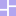

Arboriculture is the practice of growing and tending trees on purpose: pruning, grafting, choosing what to plant where. Last lesson built one behavior tree and walked through how it ticks; this one is about the craft of building trees that stay easy to grow, read, and reuse as they get bigger, using two more pieces from the same demo project: decorators and the blackboard.
Decorator
wraps one child
Inverter
flips the result
Limiter
caps how often/long

Blackboard
shared memory
Part 1. Decorators: One Child, Reinterpreted
A decorator is a node with exactly one child that changes how that child's result gets reported, without changing what the child itself does:
extends BehaviorTree_Node
class_name BehaviorTree_Node_Decorator
func _ready():
if get_child_count() == 0:
print("Error! Behavior tree decorator does not have a child")
elif get_child_count() > 1:
print("Error! Behavior tree decorator has too many children")
extends BehaviorTree_Node_Decorator
class_name BehaviorTree_Node_Decorator_Inverter
var INVERT = {
SUCCESS : FAILURE,
FAILURE : SUCCESS,
RUNNING : RUNNING,
}
func tick(actor, blackboard, delta):
var response = get_child(0).tick(actor, blackboard, delta)
if response in INVERT.keys():
return INVERT[response]
return FAILURE
Inverter is the whole pattern in miniature: tick the one child, look up its answer in INVERT, hand back the opposite. SUCCESS becomes FAILURE and back, RUNNING passes through unchanged (there's no sensible "opposite" of still-in-progress). The child node itself never finds out it's being inverted; it ticks exactly the same as it would anywhere else in the tree.
Part 2. The Payoff: Reusing a Condition
Go back to the Gatherer's tree from last lesson. Both branches ask about daylight, but neither branch has its own "is it night" condition:
Selector
├─ Sequencer "Go to grass during day"
│ ├─ Check daylight (Condition_Day)
│ ├─ Set Move Target as Fruit (Condition)
│ └─ Move to Move Target (Action)
└─ Sequencer "Go to shelter at night"
├─ Inverter "Check for night"
│ └─ Check daylight (the exact same Condition_Day script)
├─ Set Move Target as Shelter (Condition)
└─ Move to Move Target (the exact same Action script)
"Is it night" is never written anywhere. It's the exact same Condition_Day leaf, instanced a second time, wrapped in an Inverter. Same for Move to Move Target: one script, reused for both grass and shelter, because it only ever reads whatever's currently stored under "Move target" + actor.name rather than hard-coding a destination. Two leaves, reused three times total across the tree, is the entire arboriculture argument: write the small, single-purpose piece once, and lean on the tree's structure (composites, decorators) to reuse and recombine it, rather than writing near-duplicate leaves for every situation that's almost the same as another one.
The Inverter in the scene tree

Zoom in on "Go to shelter at night" in the actual project: the Inverter node has exactly one child, another "Check daylight" node, same script as the one under the grass branch.
Part 3. The Blackboard: Memory That Isn't a State
The FSM lesson's focus_target was called out as "the FSM equivalent of a behavior tree's blackboard." Here's the real thing it was pointing at:
@icon("res://Assets/BT Icons/blackboard.svg")
extends BehaviorTree
class_name BehaviorTree_Blackboard
var board: Dictionary = {}
func set_value(key: String, value: Variant) -> void:
board[key] = value
func set_running_leaf(action_leaf_node: Variant) -> void:
set_value("Running leaf", action_leaf_node)
A blackboard is nothing more than a shared dictionary, one instance per tree, passed into every single tick() call (look back at any leaf or composite above, blackboard is always the second argument). It's how Set Move Target as Fruit hands a destination off to Move to Move Target, two entirely separate leaf nodes that never reference each other directly:
func tick(actor, blackboard, _delta):
var closest_grass_node = null
var dist = dist_start
for node in get_tree().get_nodes_in_group(group):
var dist_temp = (actor.global_transform.origin - node.global_transform.origin).length()
if dist_temp < dist:
dist = dist_temp
closest_grass_node = node
blackboard.board["Move target" + actor.name] = node
if !(closest_grass_node == null):
return SUCCESS
return FAILURE
That's the same shape as the FSM's memory, working memory that outlives a single tick and gets read by a different piece of code than the one that wrote it, just without a named state to hang it off of. A blackboard entry belongs to the whole tree, not to whichever branch happens to be running right now.
Part 4. A Few Rules of Thumb
- Name nodes for what they mean, not what they are. The Gatherer's scene tree doesn't have two nodes both named "Sequencer"; it has "Go to grass during day" and "Go to shelter at night". The node names are the documentation, readable without opening a single script.
- Keep leaves small and single-purpose. Condition_Day checks exactly one thing. That's what made it reusable under an Inverter with zero changes; a leaf that checked three unrelated things at once couldn't be recombined nearly as easily.
- Prefer a decorator over a near-duplicate leaf. Whenever you catch yourself about to copy a Condition and just negate its logic by hand, that's an Inverter instead.
- Selector order is priority order. Since a Selector stops at the first non-failure, put the behavior you want to win ties first, deliberately, not by whichever order you happened to drag the nodes in.
Part 5. Try It
- In the project, find bt_node_deco.gd and read its _ready() check again. What happens (in the editor, not at runtime) if you add a second child under an Inverter? Try it and see what gets printed.
- Design (on paper) a Limiter decorator, one that only lets its child tick a maximum number of times, then always returns FAILURE after that. What state would it need to track internally that Inverter doesn't need at all?
- Find one other place in the Gatherer's tree (besides the daylight check) where the same leaf script gets instanced more than once. What made that leaf reusable?
Checkpoint
Before moving on, make sure you can:
- Explain what a decorator is allowed to have exactly one of, and why that constraint is enforced in _ready() rather than just assumed.
- Explain, using the Gatherer's actual tree, how the same "is it daytime" check gets reused to also mean "is it night," without writing a second condition.
- Explain what a blackboard is, in terms of when it's written, when it's read, and by what kind of node.
- Give one concrete rule from Part 4 and explain, in your own words, what problem it prevents.